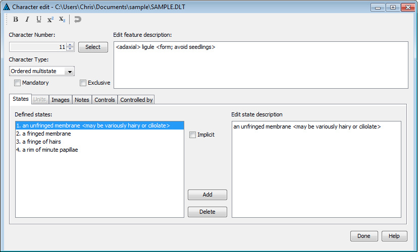
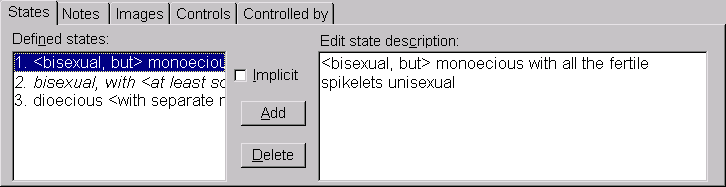
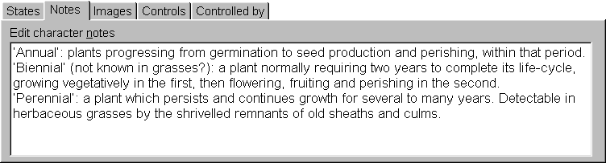
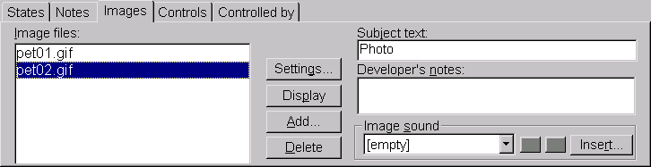
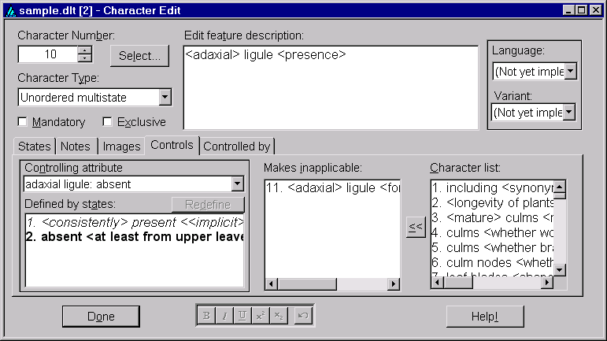
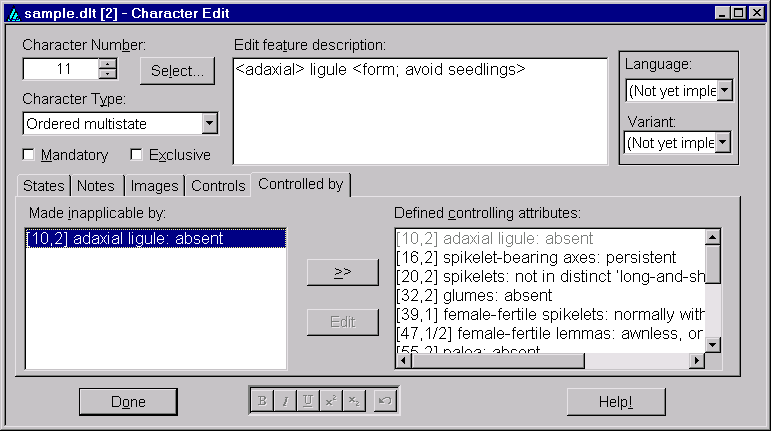

This dialog is provided for the creation and modification of characters and their associated states. It is opened either by choosing 'View > Character editor' from the menu; by right-clicking the mouse in the upper right pane (the Character Tree) of the Tree View window, and selecting 'Insert new character at this position' or 'Append new character to end of list' from the resulting menu; or by double-clicking on a feature description in either the Tree or Grid View. Here is an example.

This is a relatively complex dialog, with a number of components.
The character number selector. At the upper-left of the dialog is a small up-down control showing the number of the character being edited. The value shown here can be changed to select a different character for editing. Alternatively, a character can be selected from the character list by clicking the 'Select' button.
The character type selector. Just below the character number selector is a drop-down listbox that indicates the character type. The type should be chosen for any newly define character. It is not possible to freely reassign the type of a character once it has been defined, provided no items are encoded for that character, and no controlling attributes are defined by it.
The mandatory character checkbox. This indicates whether the character is 'mandatory', that is, must be recorded in every item.
The exclusive character checkbox. This checkbox, which appears only for multistate characters, indicates whether states of the character should be 'exclusive', that is, whether only a single state of the character can be associated with any given item.
The feature description editor. This is located at the top centre of the dialog, and is a rich edit control containing the 'feature', or basic description of the character. As with 'conventional' DELTA coding, the feature description should usually begin with a lower-case letter.
The language selector. This is at the upper-right of the dialog. It is intended to allow selection of alternative languages. This feature has not yet been implemented.
The wording variant selector. This is near the upper-right corner of the dialog. It is intended to allow the used to select among alternate wordings of the character list for different purposes (such as key generation vs. natural language descriptions). This feature has not yet been implemented.
The 'Help' button. This is at the lower right of the dialog. It is currently not functional.
The formatting toolbar. This is located at the bottom centre of the dialog. It provides buttons for rendering text in bold, italics, etc., and for undoing editing operations. The toolbar will operate with whichever rich edit control is currently active.
The 'Done' button. This is at the lower left of the dialog. It closes the dialog.
In mid-dialog are a series of different controls, each providing access to a different aspect of the character. These are selected via a tab mechanism.

This panel contains a list of currently defined states (on the left), a rich edit control (on the right), and a check box and buttons (in the middle). The user selects among states via the list control on the left. The description of that state may then be edited in the rich editing control on the right. Clicking the 'Add' button indicates that a new state is to be inserted above the currently selected state. Clicking the 'Delete' button deletes the currently selected state. New states may be appended to the list by moving the list selection to the line below the last already-defined state, then entering the new state description in the state description editor. Pressing the 'Enter' key while in the description editor will cause the selection to move forward to the next state. This can be used to append a series of new states to the character without having to repeatedly use the list box and add button. States in the list control can be re-ordered via dragging-and-dropping. The 'Implicit' check box allows the specification of the currently selected state as the 'implicit' state. When the character is not recorded for a taxon, the implicit state value is assumed. The name of the implicit state (if one exists) will be shown in italics in the 'Defined states' list; state 2 in the figure above is implicit.

This panel consists of a single, large, rich edit control. Supplementary information about the character may be entered here.

The 'Images' panel allows the association of images with the character. On the left side of the panel is a list of the names of image files associated with the character. (Note that the program stores only the names of image files within the DELTA data file. It does not store copies of the images themselves). N.B. Although the Editor will accept blanks in image file names, such names should be avoided, as they will not work with other DELTA programs, which use blanks as delimiters. The names within this list may be re-ordered by dragging and dropping with the left mouse button. Clicking on the list with the right mouse button opens a popup menu with options for inserting, modifying or deleting images. Double-clicking (with the left mouse button) on an image file name will cause that image to be displayed in a window of its own.

This panel is used for defining 'controlling attributes'; that is, combinations of one or more states within a character, which when encoded for in a given item can make other 'dependent' characters inapplicable. It can also be used to define the associations between the controlling attributes and the corresponding dependent characters.
The example above is associated with a character that encoded ligules as being present or absent. A controlling attribute ('ligule: absent') is defined here, and is used to make inapplicable another character dealing with ligule shape.
The panel contains a drop-down list of controlling attributes defined for this character in the upper left corner, a list box of the character's states in the lower-left corner, and two lists to the right containing characters within the data set. To define a new controlling attribute, select '[new]'from the list of controlling attributes. Then use the state list box to select those states that should constitute the new controlling attribute (the selected states will appear in a bold font). When all relevant states have been selected, click the 'Define' button to define the new controlling attribute. You will be given an opportunity to assign an identifying label to the controlling attribute; by default, a label will be generated from the character's feature and state descriptions. (However, note that there is currently no provision for exporting custom labels to DELTA format.)
Characters are placed under (or removed from) the control of a given controlling attribute by use of the two list boxes on the right side of the panel. The list on the far right includes all characters in the data set. They may be added to the 'inapplicable' character list either by selecting them and clicking the move ('<<') button, or by dragging-and-dropping to the other list. A similar procedure can be used to remove characters from the 'inapplicable' list.

This panel provides an alternative way of associating dependent characters with their controlling attributes. Note, however, that controlling attributes cannot be defined in this panel.
The panel shows controlling attributes that control the current character. On the right of the panel is a list of all controlling attributes defined for the data set. On the left is a list showing those that make the current character inapplicable. Controlling attributes may be moved to (or from) the 'made inapplicable by' list either by selecting them and clicking the 'Move' button, or by dragging-and-dropping them.
The 'Edit' button is not yet functional, but is intended to take the user to a view where a given controlling attribute was defined.
This dialog is provided to change settings related to display of images and their text overlays. It is opened either by choosing 'View > Image settings' from the menu; by clicking on the 'Settings' button of the images panel of the Item Editor or Character Editor windows; or by right-clicking the mouse on an image file name in an images panel or a displayed image and selecting 'Image settings' from the resulting menu. Here is an example.
The left portion of this dialog selects default characteristics to be applied to newly created text overlays on images. Changing these settings generally has no effect on existing overlays. An exception is that changing 'Button alignment' will affect existing push-button overlays if those overlays are later edited or repositioned on their image. For more detailed information on the meaning of these settings, see the section below on Image Windows and Overlays.
Note that changes made within this dialog do not take effect immediately. You must click either the 'Apply' button or 'OK' button (which also closes the dialog) for any changes to be applied.
Character and taxon images are displayed in windows that are meant to closely resemble the appearance they have within Intkey. These images may have overlays superimposed upon them. The editor provides facilities for adding, modifying, and deleting these overlays. Here is an example of a character image, as displayed in the editor.

Note that the image window contains its own menu. The 'Subject' menu item allows the user to go to a different image attached to the same taxon or character, based on the subject text of the image. The 'Control' menu provides options for going on to the next or previous image associated with the current taxon or character, or for going on to the next taxon or character. The 'Window' menu provides options for controlling how the image and its overlays are displayed, and for obtaining information about the image.
The image above contains examples of the basic different types of overlays: text boxes (which automatically become scrollable for large amounts of text), push buttons, and 'hotspots'. Overlays are inserted, modified, or deleted by right clicking on the image or an existing overlay. This will cause a popup-menu to appear, as seen below.

The range of overlay types that are available depends upon the type of image being viewed. All image types allow for the creation of 'OK' and 'Cancel' buttons, which can be used in Intkey to close the image window; and for the creation of general-purpose 'text' overlays, which may contain any arbitrary text. Taxon images may also contain a text overlay to contain the name of the taxon, and a 'Notes' button which, when clicked, will cause notes associated with the image to be displayed in a separate window. Similarly, character images may contain a 'feature' text overlay, which displays the feature description of the character; and a 'Notes' button which, when clicked, will cause the character notes associated with the character to be displayed.
Character images may contain several other types of overlay, depending on the character type. Images associated with multistate characters may contain 'state' text overlays, which displays a state number and description. When used in Intkey, these overlays may be selected by the user to indicate the applicability of that state. The 'state' overlays may also have one or more 'hotspots' associated with them — regions of the underlying image that may also be used by an Intkey user to select the associated state. Similarly, images associated with numeric characters may contain selectable 'value' overlays that contain a numeric value (or range of numeric values), and these may also have associated hotspots. Images for numeric characters may, in addition, contain an 'enter' overlay in which an Intkey end-user may enter any value, and a 'units' overlay which displays the character's units of measurement (if they have been defined).
The basic overlays for a character image can be inserted in a single step by selecting the option 'All usual overlays'. This inserts the 'Feature description' box, 'State' boxes (for a multistate character) or 'Enter' and 'Units' boxes (for a numeric character), 'OK' and 'Cancel' buttons, a 'Notes' button (if there are notes for the character), and a hotspot for each character state.
Once they have been created, overlays may be resized or repositioned by use of the mouse (or similar pointing device). Click on a overlay to select it. Its border will become thicker. (The innermost margin of this border corresponds to the border of the 'normal' overlay window.) When the cursor is positioned over this border, it changes to a double-headed arrow, indicating that the overlay window may be re-sized by holding down the left mouse button and moving the mouse. (The 'OK', 'Cancel', and 'Notes' push-buttons are exceptions to this — they may be moved but not resized.) To move the selected overlay window, but retain its size, position the cursor in the middle of the window and hold down the left mouse button. The cursor will change to a 'hand', and moving the cursor will move the window to a new position. An overlay may not be positioned beyond the boundaries of the image window. A 'selected' overlay may be returned to its normal state by 'selecting' another overlay, or by clicking on some portion of the image where there is no overlay.
Double-clicking the left mouse button within a 'selected' overlay will open a dialog box for modification of the properties of the overlay. The dialog may also be opened by right-clicking on the overlay and selecting 'Edit overlay' from the popup menu. A sample of such a dialog for a 'state' overlay appears as show here.

The four checkboxes along the left side of the dialog control aspects of how the text within the overlay will be displayed. A tick in the first checkbox indicates that the text should be centred (both vertically and horizontally) within its border. The default behaviour is for text to begin in the upper-left corner of its containing frame. Ticking the second checkbox indicates that any comments within the state description text should be displayed, with the surrounding angle brackets converted into parentheses. By default, comments are removed from the text. A tick in the third checkbox indicates whether the state description should be omitted entirely; the default behaviour is to display the state description text. The fourth checkbox indicates that the height of the frame containing the text should automatically be adjusted to contain an integral number of lines. By default, the text boxes may be of any height.
Any text entered in the 'Additional Text' area of the dialog will be appended to the state description text. If the state description text is omitted entirely, the text entered here will be displayed instead.
In the central-right portion of the dialog are controls for viewing and modifying the position of the upper-left corner of the overlay ('X' and 'Y') and the overlay's width and height ('W' and 'H'). These values are expressed in image units, not pixels; these are values in the range 0 to 1000, with a value of 1000 corresponding to the width or height of the entire image. However, if the 'Use Integral Height' checkbox is ticked, the height value ('H') is given in terms of lines of text. The upper-left corner of the image is always taken as the origin (0,0), with positive values to the right and downwards.
Note that changes made within this dialog do not take effect immediately. You must click either the 'Apply' button or 'OK' button (which also closes the dialog) for any changes to be applied. The dialogs for modifying other types of text overlays are quite similar to the 'state' example shown here, and differ only in minor details. A corresponding dialog for 'button' overlays allows only the button's position to be modified.
A slightly different dialog is available for editing the properties of hotspots. Here is an example.

At the top of this dialog, a pair of radio buttons is used to select whether the shape of the hotspot is rectangular or elliptical. To the right centre are controls for viewing and modifying the position and extent of the hotspot, just as for text overlays. To the left are controls that affect how the hotspot boundaries appear. By default, the hotspots are invisible to Intkey user, with only a change in cursor shape notifying them when the mouse passes over a hotspot. If the 'Pop up' option is selected, the outline of the hotspot will become visible whenever the mouse passes over the hotspot or over any other hotspot or 'state' overlay associated with the same state as the hotspot. The 'Use custom color' option allows the designer to select the colour that should be used in drawing the outline of a pop-up hotspot. By default, the boundary lines are drawn by 'inverting' the colours of the display. Note that 'inverting' the colours a second time restores the original colours. Hence when hot-spot boundary lines drawn in this way exactly overlie one another, they disappear from view. If the use of a custom colour is selected, the colour to be used may be chosen from the dialog that appears when the 'Choose color' button is clicked.